作为 Android 工程师，我们每天都会经历无数次编译；而对于大型项目来说，每次编译就意味着要花去一杯咖啡的时间。可能我讲具体的数字你会更有体会，当时我在微信时，全量编译 Debug 包需要 5 分钟，而编译 Release 包更是要超过 15 分钟。
如果每次编译可以减少 1 分钟，对微信整个 Android 团队来说就可以节约 1200 分钟（团队 40 人 × 每天编译 30 次 × 1 分钟）。所以说优化编译速度，对于提升整个团队的开发效率是非常重要的。
那应该怎么样优化编译速度呢？微信、Google、Facebook 等国内外大厂都做了哪些努力呢？除了编译速度之外，关于编译你还需要了解哪些知识呢？
关于编译
虽然我们每天都在编译，那到底什么是编译呢？
你可以把编译简单理解为，将高级语言转化为机器或者虚拟机所能识别的低级语言的过程。对于 Android 来说，这个过程就是把 Java 或者 Kotlin 转变为 Android 虚拟机运行的Dalvik 字节码的过程。
编译的整个过程会涉及词法分析、语法分析 、语义检查和代码优化等步骤。对于底层编译原理感兴趣的同学，你可以挑战一下编译原理的三大经典巨作：龙书、虎书、鲸鱼书。
但今天我们的重点不是底层的编译原理，而是希望一起讨论 Android 编译需要解决的问题是什么，目前又遇到了哪些挑战，以及国内外大厂又给出了什么样的解决方案。
1. Android 编译的基础知识
无论是微信的编译优化，还是 Tinker 项目，都涉及比较多的编译相关知识，因此我在 Android 编译方面研究颇多，经验也比较丰富。Android 的编译构建流程主要包括代码、资源以及 Native Library 三部分，整个流程可以参考官方文档的构建流程图。
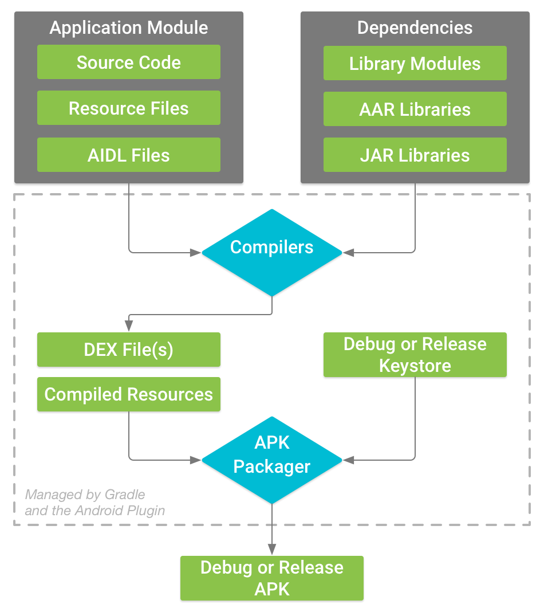
Gradle是 Android 官方的编译工具，它也是 GitHub 上的一个开源项目。从 Gradle 的更新日志可以看到，当前这个项目还更新得非常频繁，基本上每一两个月都会有新的版本。对于 Gradle，我感觉最痛苦的还是 Gradle Plugin 的编写，主要是因为 Gradle 在这方面没有完善的文档，因此一般都只能靠看源码或者断点调试的方法。
但是编译实在太重要了，每个公司的情况又各不相同，必须强行造一套自己的“轮子”。已经开源的项目有 Facebook 的Buck以及 Google 的Bazel。
为什么要自己“造轮子”呢？主要有下面几个原因：
-
统一编译工具。Facebook、Google 都有专门的团队负责编译工作，他们希望内部的所有项目都使用同一套构建工具，这里包括 Android、Java、iOS、Go、C++ 等。编译工具的统一优化，所有项目都会受益。
-
代码组织管理架构。Facebook 和 Google 的代码管理有一个非常特别的地方，就是整个公司的所有项目都放到同一个仓库里面。因此整个仓库非常庞大，所以他们也不会使用 Git。目前 Google 使用的是Piper，Facebook 是基于HG修改的，也是一种基于分布式的文件系统。
-
极致的性能追求。Buck 和 Bazel 的性能的确比 Gradle 更好，内部包含它们的各种编译优化。但是它们或多或少都有一些定制的味道，例如对 Maven、JCenter 这样的外部依赖支持的也不是太好。
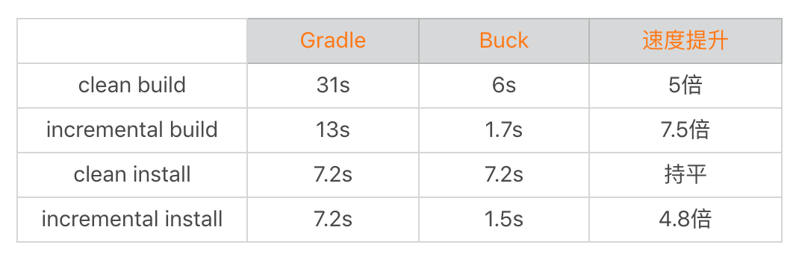
“程序员最痛恨写文档，还有别人不写文档”，所以它们的文档也是比较少的，如果想做二次定制开发会感到很痛苦。如果你想把编译工具切换到 Buck 和 Bazel，需要下很大的决心，而且还需要考虑和其他上下游项目的协作。当然即使我们不去直接使用，它们内部的优化思路也非常值得我们学习和参考。
Gradle、Buck、Bazel 都是以更快的编译速度、更强大的代码优化为目标，我们下面一起来看看它们做了哪些努力。
2. 编译速度
回想一下我们的 Android 开发生涯，在编译这件事情上面究竟浪费了多少时间和生命。正如前面我所说，编译速度对团队效率非常重要。
关于编译速度，我们最关心的可能还是编译 Debug 包的速度，尤其是增量编译（incremental build）的速度，希望可以做到更加快速的调试。正如下图所示，我们每次代码验证都要经过编译和安装两个步骤。
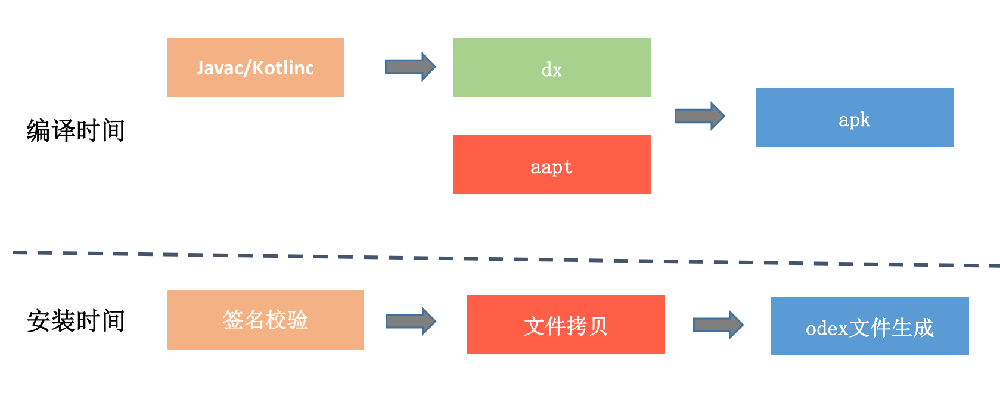
-
编译时间。把 Java 或者 Kotlin 代码编译为“.class“文件，然后通过 dx 编译为 Dex 文件。对于增量编译，我们希望编译尽可能少的代码和资源，最理想情况是只编译变化的部分。但是由于代码之间的依赖，大部分情况这并不可行。这个时候我们只能退而求其次，希望编译更少的模块。Android Plugin 3.0使用 Implementation 代替 Compile，正是为了优化依赖关系。
-
安装时间。我们要先经过签名校验，校验成功后会有一大堆的文件拷贝工作，例如 APK 文件、Library 文件、Dex 文件等。之后我们还需要编译 Odex 文件，这个过程特别是在 Android 5.0 和 6.0 会非常耗时。对于增量编译，最好的优化是直接应用新的代码，无需重新安装新的 APK。
对于增量编译，我先来讲讲 Gradle 的官方方案Instant Run。在 Android Plugin 2.3 之前，它使用的 Multidex 实现。在 Android Plugin 2.3 之后，它使用 Android 5.0 新增的 Split APK 机制。
如下图所示，资源和 Manifest 都放在 Base APK 中， 在 Base APK 中代码只有 Instant Run 框架，应用的本身的代码都在 Split APK 中。
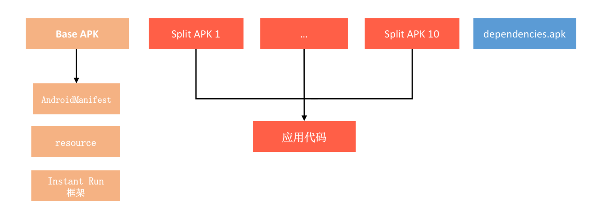
Instant Run 有三种模式，如果是热交换和温交换，我们都无需重新安装新的 Split APK，它们的区别在于是否重启 Activity。对于冷交换，我们需要通过adb install-multiple -r -t重新安装改变的 Split APK，应用也需要重启。
虽然无论哪一种模式，我们都不需要重新安装 Base APK。这让 Instant Run 看起来是不是很不错，但是在大型项目里面，它的性能依然非常糟糕，主要原因是：
-
多进程问题。“The app was restarted since it uses multiple processes”，如果应用存在多进程，热交换和温交换都不能生效。因为大部分应用都会存在多进程的情况，Instant Run 的速度也就大打折扣。
-
Split APK 安装问题。虽然 Split APK 的安装不会生成 Odex 文件，但是这里依然会有签名校验和文件拷贝（APK 安装的乒乓机制）。这个时间需要几秒到几十秒，是不能接受的。
-
javac 问题。在 Gradle 4.6 之前，如果项目中运用了 Annotation Processor。那不好意思，本次修改以及它依赖的模块都需要全量 javac，而这个过程是非常慢的，可能会需要几十秒。这个问题直到Gradle 4.7才解决，关于这个问题原因的讨论你可以参考这个Issue。
你还可以看看这一个 Issue：“full rebuild if a class contains a constant”，假设修改的类中包含一个“public static final”的变量，那同样也不好意思，本次修改以及它依赖的模块都需要全量 javac。这是为什么呢？因为常量池是会直接把值编译到其他类中，Gradle 并不知道有哪些类可能使用了这个常量。
询问 Gradle 的工作人员，他们出给的解决方案是下面这个：
// 原来的常量定义:public static final int MAGIC = 23 // 将常量定义替换成方法: public static int magic() { return 23;}对于大型项目来说，这肯定是不可行的。正如我在 Issue 中所写的一样，无论我们是不是真正改到这个常量，Gradle 都会无脑的全量 javac，这样肯定是不对的。事实上，我们可以通过比对这次代码修改，看看是否有真正改变某一个常量的值。
但是可能用过阿里的Freeline或者蘑菇街的极速编译的同学会有疑问，它们的方案为什么不会遇到 Annotation 和常量的问题？
事实上，它们的方案在大部分情况比 Instant Run 更快，那是因为牺牲了正确性。也就是说它们为了追求更快的速度，直接忽略了 Annotation 和常量改变可能带来错误的编译产物。Instant Run 作为官方方案，它优先保证的是 100% 的正确性。
当然 Google 的人也发现了 Instant Run 的种种问题，在 Android Studio 3.5 之后，对于 Android 8.0 以后的设备将会使用新的方案“Apply Changes”代替 Instant Run。目前我还没找到关于这套方案更多的资料，不过我认为应该是抛弃了 Split APK 机制。
一直以来，我心目中都有一套理想的编译方案，这套方案安装的 Base APK 依然只是一个壳 APK，真正的业务代码放到 Assets 的 ClassesN.dex 中。
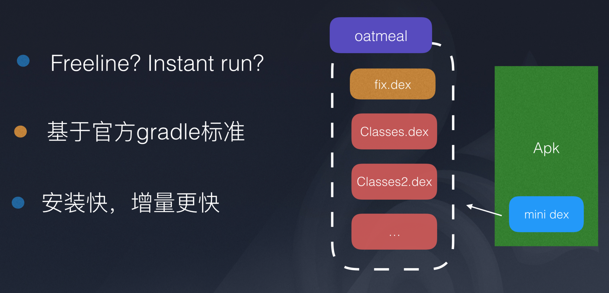
-
无需安装。依然使用类似 Tinker 热修复的方法，每次只把修改以及依赖的类插入到 pathclassloader 的最前方就可以，不熟悉的同学可以参考《微信 Android 热补丁实践演进之路》中的 Qzone 方案。
-
Oatmeal。为了解决首次运行时 Assets 中 ClassesN.dex 的 Odex 耗时问题，我们可以使用“安装包优化“中讲过的 ReDex 中的黑科技：Oatmeal。它可以在 100 毫秒以内生成一个完全解释执行的 Odex 文件。
-
关闭 JIT。我们通过在 AndroidManifest 指定android:vmSafeMode=“true”，关闭虚拟机的 JIT 优化，这样也就不会出现 Tinker 在Android N 混合编译遇到的问题。
这套方案应该可以完全解决 Instant Run 当前的各种问题，我也希望对编译优化感兴趣的同学可以自行实现这一套方案，并能开源出来。
对于编译速度的优化，我还有几个建议：
-
更换编译机器。对于实力雄厚的公司，直接更换 Mac 或者其他更给力的设备作为编译机，这种方式是最简单的。
-
Build Cache。可以将大部分不常改变的项目拆离出去，并使用远端 Cache模式保留编译后的缓存。
-
升级 Gradle 和 SDK Build Tools。我们应该及时去升级最新的编译工具链，享受 Google 的最新优化成果。
-
使用 Buck。无论是 Buck 的 exopackage，还是代码的增量编译，Buck 都更加高效。但我前面也说过，一个大型项目如果要切换到 Buck，其实顾虑还是比较多的。在 2014 年初微信就接入了 Buck，但是因为跟其他项目协作的问题，导致在 2015 年切换回 Gradle 方案。相比之下，可能目前最热的 Flutter 中Hot Reload秒级编译功能会更有吸引力。
当然最近几个 Android Studio 版本，Google 也做了大量的其他优化，例如使用AAPT2替代了 AAPT 来编译 Android 资源。AAPT2 实现了资源的增量编译，它将资源的编译拆分成 Compile 和 Link 两个步骤。前者资源文件以二进制形式编译 Flat 格式，后者合并所有的文件再打包。
除了 AAPT2，Google 还引入了 d8 和 R8，下面分别是 Google 提供的一些测试数据。
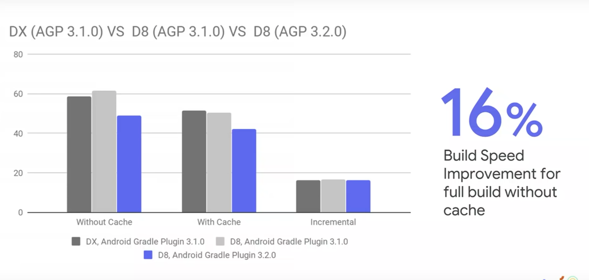
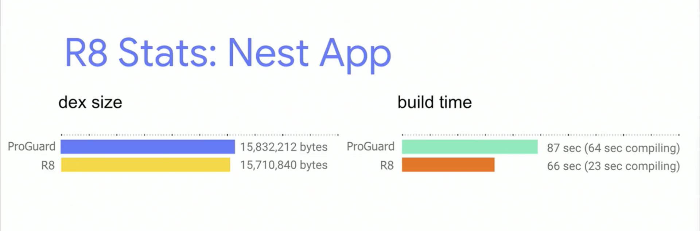
那什么是 d8 和 R8 呢？除了编译速度的优化，它们还有哪些其他的作用？
3. 代码优化
对于 Debug 包编译，我们更关心速度。但是对于 Release 包来说，代码的优化更加重要，因为我们会更加在意应用的性能。
下面我就分别讲讲 ProGuard、d8、R8 和 ReDex 这四种我们可能会用到的代码优化工具。
ProGuard
在微信 Release 包 12 分钟的编译过程里，单独 ProGuard 就需要花费 8 分钟。尽管 ProGuard 真的很慢，但是基本每个项目都会使用到它。加入了 ProGuard 之后，应用的构建过程流程如下：
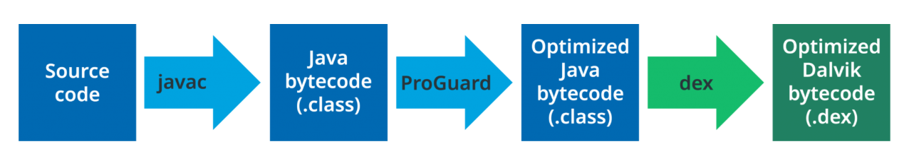
ProGuard 主要有混淆、裁剪、优化这三大功能，它的整个处理流程是：
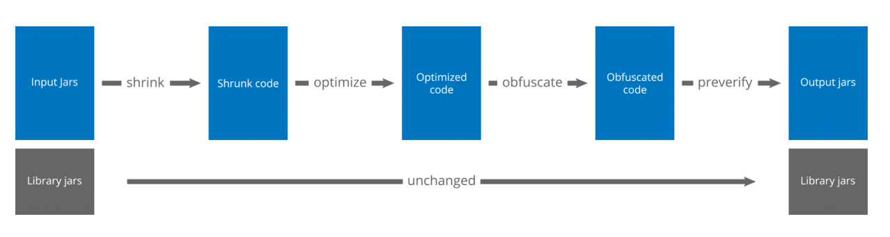
其中优化包括内联、修饰符、合并类和方法等 30 多种，具体介绍与使用方法你可以参考官方文档。
d8
Android Studio 3.0 推出了d8，并在 3.1 正式成为默认工具。它的作用是将“.class”文件编译为 Dex 文件，取代之前的 dx 工具。
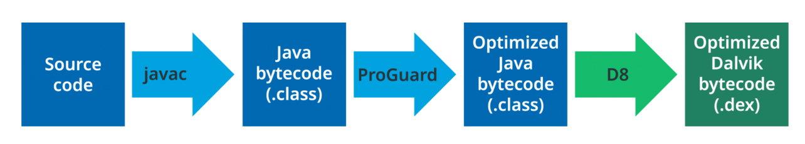
d8 除了更快的编译速度之外，还有一个优化是减少生成的 Dex 大小。根据 Google 的测试结果，大约会有 3%～5% 的优化。
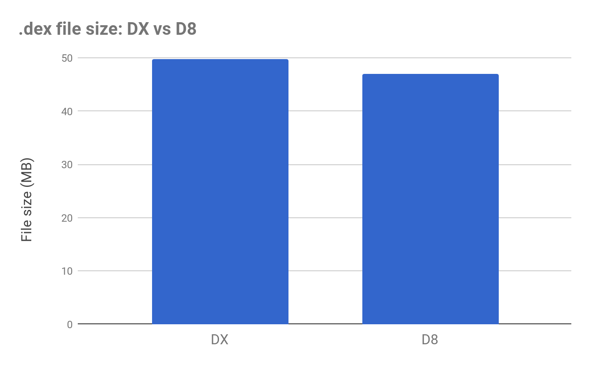
R8
R8 在 Android Studio 3.1 中引入，它的志向更加高远，它的目标是取代 ProGuard 和 d8。我们可以直接使用 R8 把“.class”文件变成 Dex。
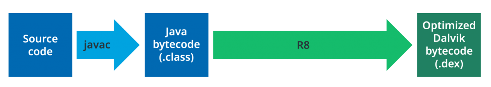
同时，R8 还支持 ProGuard 中混淆、裁剪、优化这三大功能。由于目前 R8 依然处于实验阶段，网上的介绍资料并不多，你可以参考下面这些资料：
- ProGuard 和 R8 对比：ProGuard and R8: a comparison of optimizers。
- Jake Wharton 大神的博客最近有很多 R8 相关的文章：https://jakewharton.com/blog/。
R8 的最终目的跟 d8 一样，一个是加快编译速度，一个是更强大的代码优化。
ReDex
如果说 R8 是未来想取代的 ProGuard 的工具，那 Facebook 的内部使用的ReDex其实已经做到了。
Facebook 内部的很多项目都已经全部切换到 ReDex，不再使用 ProGuard 了。跟 ProGuard 不同的是，它直接输入的对象是 Dex，而不是“.class”文件，也就是它是直接针对最终产物的优化，所见即所得。
在前面的文章中，我已经不止一次提到 ReDex 这个项目，因为它里面的功能实在是太强大了，具体可以参考专栏前面的文章《包体积优化（上）：如何减少安装包大小？》。
- Interdex：类重排和文件重排、Dex 分包优化。
- Oatmeal：直接生成的 Odex 文件。
- StripDebugInfo：去除 Dex 中的 Debug 信息。
此外，ReDex 中例如Type Erasure和去除代码中的Aceess 方法也是非常不错的功能，它们无论对包体积还是应用的运行速度都有帮助，因此我也鼓励你去研究和实践一下它们的用法和效果。但是 ReDex 的文档也是万年不更新的，而且里面掺杂了一些 Facebook 内部定制的逻辑，所以它用起来的确非常不方便。目前我主要还是直接研究它的源码，参考它的原理，然后再直接单独实现。
事实上，Buck 里面其实也还有很多好用的东西，但是文档里面依然什么都没有提到，所以还是需要“read the source code”。
- Library Merge 和 Relinker
- 多语言拆分
- 分包支持
- ReDex 支持
持续交付
Gradle、Buck、Bazel 它们代表的都是狭义上的编译，我认为广义的编译应该包括打包构建、Code Review、代码工程管理、代码扫描等流程，也就是业界最近经常提起的持续集成。
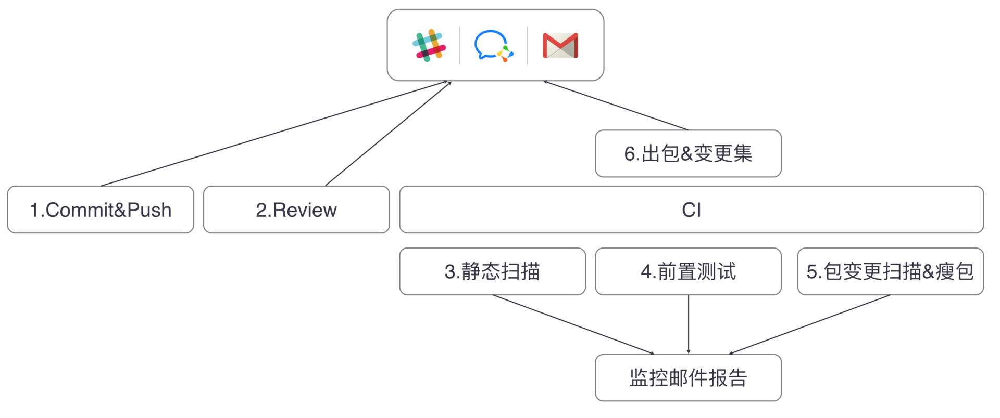
目前最常用的持续集成工具有 Jenkins、GitLab CI、Travis CI 等，GitHub 也有提供自己的持续集成服务。每个大公司都有自己的持续集成方案，例如腾讯的 RDM、阿里的摩天轮、大众点评的MCI等。
下面我来简单讲一下我对持续集成的一些经验和看法：
-
自定义代码检查。每个公司都会有自己的编码规范，代码检查的目的在于防止不符合规范的代码提交到远程仓库中。比如微信就定义了一套代码规范，并且写了专门的插件来检测。例如日志规范、不能直接使用 new Thread、new Handler 等，而且违反者将会得到一定的惩罚。自定义代码检测可以通过完全自己实现或者扩展 Findbugs 插件，例如美团它们就利用 Findbugs 实现了Android 漏洞扫描工具 Code Arbiter。
-
第三方代码检查。业界比较常用的代码扫描工具有收费的 Coverity，以及 Facebook 开源的Infer，例如空指针、多线程问题、资源泄漏等很多问题都可以扫描出来。除了增加检测流程，我最大的体会是需要同时增加人员的培训。我遇到很多开发者为了解决扫描出来的问题，空指针就直接判空、多线程就直接加锁，最后可能会造成更加严重的问题。
-
Code Review。关于 Code Review，集成 GitLab、Phabricator 或者 Gerrit 都是不错的选择。我们一定要重视 Code Review，这也是给其他人展示我们“伟大”代码的机会。而且我们自己应该是第一个 Code Reviewer，在给别人 Review 之前，自己先以第三者的角度审视一次代码。这样先通过自己这一关的考验，既尊重了别人的时间，也可以为自己树立良好的技术品牌。
持续集成涉及的流程有很多，你需要结合自己团队的现状。如果只是一味地去增加流程，有时候可能适得其反。
总结
在 Android 8.0，Google 引入了Dexlayout库实现类和方法的重排，Facebook 的 Buck 也第一时间引入了 AAPT2。ReDex、d8、R8 其实都是相辅相成，可以看到 Google 也在摄取社区的知识，但同时我们也会从 Google 的新技术发展里寻求思路。
我在写今天的内容时还有另外一个体会，Google 为了解决 Android 编译速度的问题，花了大量的力气结果却不尽如人意。我想说如果我们敢于跳出系统的制约，可能才会彻底解决这个问题，正如在 Flutter 上面就可以完美实现秒级编译。其实做人、做事也是如此，我们经常会陷入局部最优解的困局，或者走进“思维怪圈”，这时如果能跳出路径依赖，从更高的维度重新思考、审视全局，得到的体会可能会完全不一样。
课后作业
在你的工作中，遇到过哪些编译问题？有没有做过具体优化编译速度的工作？对于编译，你还有哪些疑问？欢迎留言跟我和其他同学一起讨论。
对于 Android Build System，可以说每年都会有不少的变化，也有很多新的东西出来。所以我们应该保持敏感度，你会发现很多工具都非常有用，例如 Desugar、Dexlayout、JVM TI、App Bundle 等。
今天的课后作业是，请你观看 2018 年 Google I/O 编译工具相关的视频，在留言中写下自己的心得体会。
COMMUNITY NOTES
读者评论
对编译有了更深的认识，另外，Gradle 官方有个 build-scan 的功能，可以生成构建期间的详细报告，其中有性能相关的统计，可以帮助分析一些耗时的 task 等。
微信这么大的一个app，android才40人？
odex文件，oat文件什么区别？是同时存在的吗？
看到有用到热修复的方法，这个基于插件化技术的方式在安卓9.0以后就用不了吧，这个怎么解决呢？
以前没了解过这块，今天算是懂了大部分原理了。厉害
以前用的windows 每次编译基本要两分钟了，特别影响开发效率，现在换的mac，比以前快了，但还是觉得慢😊
annotation processor遇到的问题就是，一旦修改了生成规则，所有类都需要重新解析生成再编译。如果不改，会不会依旧重新编译，没有仔细观察过。
1.为什么把常量替换成方法对于大项目不行？是因为方法数吗？2.对于annotation processor出现全量更新问题，gradle4.7的文档该如何解读？
分享 ProGuard 的用法 ：http://blog.smallraw.com/index.php/category/javaProGuard/
请问作者有没有了解过 JRebel for Android，虽然现在下线了，但是去年我用的时候感觉热部署很快，不知道是啥原理？
编译一下的时间 都可以去厕所蹲一会了。。。
项目大了之后，一直受编译速度的折磨，即使换了机器，依旧还是那么慢，真的很恼火。google flutter的秒级编译速度刚开始确实让我眼前一亮，只可惜用flutter写的代码太难看了，不知道业界有什么办法能让flutter代码更加简洁一些呢？